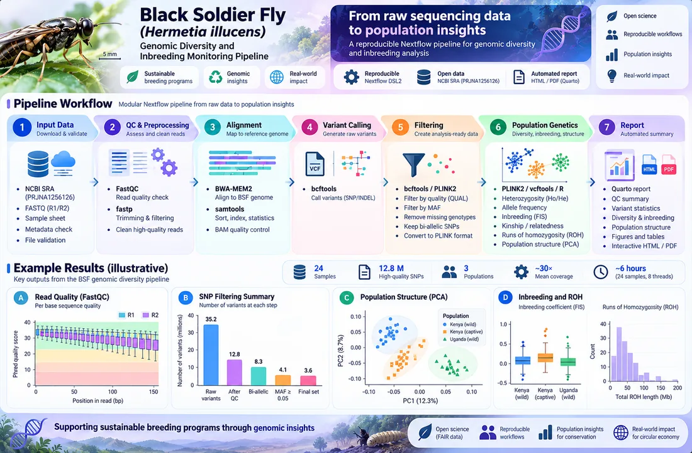

← All research
Black Soldier Fly genomic diversity pipeline
A reproducible Nextflow workflow for genomic diversity and inbreeding monitoring in Black Soldier Fly breeding populations.
- Status
- Completed, 2026
- Where
- Entobel, Singapore (internship)
The problem
Industrial insect breeding can slowly lose genetic diversity, and inbreeding can reduce productivity. Breeders need a repeatable way to measure diversity and relatedness across generations from sequencing data.
Pipeline
- Quality control and alignment of sequencing reads.
- Variant calling and filtering.
- Heterozygosity, relatedness, population structure (PCA) and runs of homozygosity.
- Automatic report generation so results are comparable between batches.

Code
The full workflow is on GitHub.